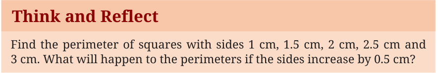
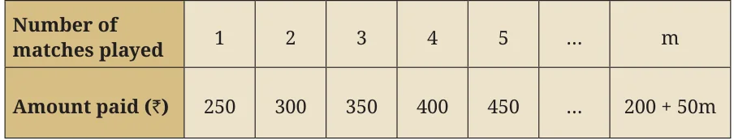
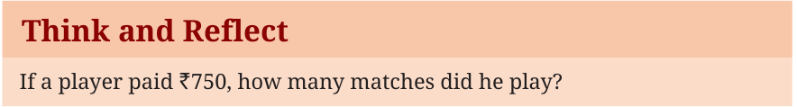
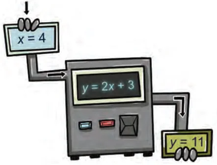
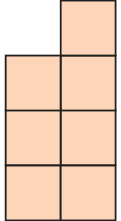

<!DOCTYPE html>
<html lang="en">
<head>
<meta charset="UTF-8">
<meta name="viewport" content="width=device-width,initial-scale=1">
<title>2.2 Linear Polynomials — Introduction to Linear Polynomials</title>
<meta name="description" content="Class 9 Mathematics · Introduction to Linear Polynomials · 2.2 Linear Polynomials">
<link rel="icon" href="data:image/svg+xml,<svg xmlns='http://www.w3.org/2000/svg' viewBox='0 0 100 100'><text y='.9em' font-size='90'>📘</text></svg>">
<link rel="stylesheet" href="../../../assets/book.css">
<link rel="stylesheet" href="https://cdn.jsdelivr.net/npm/katex@0.16.11/dist/katex.min.css" crossorigin="anonymous">
</head>
<body>
<header class="topbar">
<div class="topbar-in">
  <div class="crumb">
    <span class="c1"><a href="../../../index.html">Library</a> · <a href="../../index.html">Class 9 Mathematics</a></span>
    <span class="c2">Introduction to Linear Polynomials · 2.2 Linear Polynomials</span>
  </div>
  <a class="tb-btn" data-nav="prev" href="../../02-introduction-to-linear-polynomials/02-exercise-2.1/index.html" title="Exercise 2.1">←</a>
  <details class="drawer"><summary class="tb-btn" title="Sections in this chapter">☰</summary>
<div class="drawer-panel"><div class="dh">Introduction to Linear Polynomials</div><a href="../01-introduction-2.1/index.html">2.1 Introduction</a><a href="../02-exercise-2.1/index.html">Exercise 2.1</a><a href="../03-linear-polynomials-2.2/index.html" aria-current="page">2.2 Linear Polynomials</a><a href="../04-exercise-2.2/index.html">Exercise 2.2</a><a href="../05-exploring-linear-patterns-2.3/index.html">2.3 Exploring linear patterns</a><a href="../06-exercise-2.3/index.html">Exercise 2.3</a><a href="../07-linear-growth-and-linear-decay-2.4/index.html">2.4 Linear growth and linear decay</a><a href="../08-exercise-2.4/index.html">Exercise 2.4</a><a href="../09-linear-relationships-2.5/index.html">2.5 Linear Relationships</a><a href="../10-exercise-2.5/index.html">Exercise 2.5</a><a href="../11-visualising-linear-relationships-2.6/index.html">2.6 Visualising linear relationships</a><a href="../12-exercise-2.6/index.html">Exercise 2.6</a></div></details>
  <a class="tb-btn" data-nav="next" href="../../02-introduction-to-linear-polynomials/04-exercise-2.2/index.html" title="Exercise 2.2">→</a>
  <button class="tb-btn" data-theme-toggle title="Toggle light / dark" aria-label="Toggle light or dark theme">◐</button>
</div>
<div class="progress"><span style="width:9.9%"></span></div>
</header>
<main class="wrap">
<div class="sec-head">
  <p class="eyebrow"><a href="../index.html">Chapter 2 · Introduction to Linear Polynomials</a></p>
  <h1>2.2 Linear Polynomials</h1>
  <p class="sec-meta">Textbook pages 4–6 · 8 figures</p>
</div>
<article class="prose">
<p>We begin with some examples involving linear polynomials. Example 4: The perimeter of a square of side x is 4x, which is a linear polynomial in the variable x.</p>
<figure class="fig wide"></figure>
<p>Example 5: A chess club charges a joining fee of `200 plus `50 for every match played. The following table shows the amount a player will have to pay as the number of matches varies.</p>
<figure class="fig table-fig wide"></figure>
<p>Hence, if m is the number of matches played, the total cost will be `(200 \(+ 50m)\). Observe that \(200 + 50m\) is a linear polynomial in the variable m. The amount paid increases by the constant value of `50 for every additional match played.</p>
<figure class="fig wide"></figure>
<p>The examples given above highlight a characteristic feature of linear ­polynomials - that the difference between the successive values at integers is ­constant. In Example 4, the perimeters increase by 2 cm each time the side of the square increases by 0.5 cm. Similarly in Example 5,</p>
<p>the amount paid by a player increases by `50 for every additional match played. Such patterns are called linear patterns. When we equate a linear polynomial in one variable to a constant, we get a linear equation. Let us consider the following example. Example 6: The sum of two numbers is 64. One of the numbers is 10 more than the other. What are the two numbers? Let the smaller number be x. Then the larger number must be \(x + 10\). Since their sum is 64, we have the linear equation \(x +\) (x \(+ 10) = 64\). This implies that \(2x + 10 = 64\). Note that \(2x + 10\) is a linear polynomial. By equating it to 64 we get a linear equation \(2x = 54\) or \(x = 27\). The numbers are therefore, 27 and 37. Polynomials can also be thought of as input-output processes. For instance, consider the linear polynomial \(2x + 3\). For every x, there is a corresponding value of the polynomial \(2x + 3\). For instance, if \(x = 4\), we substitute 4 in the expression to get \(2 \times 4 + 3 = 11\). If \(x = - 6\), then we substitute \(- 6\) in the expression to get \(2 \times - 6 + 3 = - 9\). Fig. 2.3 shows this process as an input-output machine where the input is the value of x and the output is the value of \(2x + 3\). This process can be referred to as a function where the expression \(2x + 3\) is a function of the variable x. You will learn more about functions in later grades.</p>
<figure class="fig"><figcaption>Fig. 2.3: A linear expression as an input-output process</figcaption></figure>
<h2 id="s-think-and-reflect">Think and Reflect</h2>
<p>We have learnt that to evaluate the value of an algebraic expression, we substitute a value of the variable in the given expression. Consider ­Example 3, where the wire is bent to form a rectangle. Here, the area</p>
<p>of the rectangle, \(10x - x\) , is a function of x. Can you interpret this as an input-output process? What value does the expression take when</p>
<div class="mathblock"><p>\(x = 6\) cm?</p></div>
<p>Note that \(2x + 3\) is a linear function, whereas \(10x - x\) is a quadratic ­function.</p>
<figure class="fig"></figure>
<ul class="qlist">
<li><span class="mk">1.</span><span class="lt">Find the value of the linear polynomial \(5x - 3\) if:</span></li>
<li><span class="mk">(i)</span><span class="lt">\(x = 0\) (ii) \(x = - 1\) (iii) \(x = 2\)</span></li>
<li><span class="mk">2.</span><span class="lt">Find the value of the quadratic polynomial \(7s - 4s + 6\) if:</span></li>
</ul>
<ul class="qlist">
<li><span class="mk">(i)</span><span class="lt">\(s = 0\) (ii) \(s = - 3\) (iii) \(s = 4\)</span></li>
<li><span class="mk">3.</span><span class="lt">The present age of Salil’s mother is three times Salil’s present age.</span></li>
</ul>
<p>After 5 years, their ages will add up to 70 years. Find their present ages.</p>
<ul class="qlist">
<li><span class="mk">4.</span><span class="lt">The difference between two positive integers is 63. The ratio of the</span></li>
</ul>
<p>two integers is 2:5. Find the two integers.</p>
<ul class="qlist">
<li><span class="mk">5.</span><span class="lt">Ruby has 3 times as many two-rupee coins as she has five</span></li>
</ul>
<p>­rupee-coins. If she has a total `88, how many coins does she have of each type?</p>
<ul class="qlist">
<li><span class="mk">6.</span><span class="lt">A farmer cuts a 300 feet fence into two pieces of different sizes.</span></li>
</ul>
<p>The longer piece is four times as long as the shorter piece. How long are the two pieces?</p>
<ul class="qlist">
<li><span class="mk">7.</span><span class="lt">If the length of a rectangle is three more than twice its width and</span></li>
</ul>
<p>its perimeter is 24 cm, what are the dimensions of the rectangle?</p>
<h2 id="s-2-3-exploring-linear-patterns">2.3 Exploring linear patterns</h2>
<p>Observe the following growing pattern of square tiles.</p>
<figure class="fig side-fig"><figcaption>Fig. 2.4: A growing pattern of square tiles</figcaption></figure>
<figure class="fig"></figure>
<figure class="fig"></figure>
<p>Stage 1 Stage 2 Stage 3 Stage 4</p>
</article>
<nav class="pager"><a class="" data-nav="prev" href="../../02-introduction-to-linear-polynomials/02-exercise-2.1/index.html"><span class="dir">← Previous</span><span class="t">Exercise 2.1</span><span class="ch">Introduction to Linear Polynomials</span></a><a class="nx" data-nav="next" href="../../02-introduction-to-linear-polynomials/04-exercise-2.2/index.html"><span class="dir">Next →</span><span class="t">Exercise 2.2</span><span class="ch">Introduction to Linear Polynomials</span></a></nav>
</main><footer class="site">Generated from the source textbook PDFs · text, figures and exercises belong to their respective publishers.</footer><script defer src="https://cdn.jsdelivr.net/npm/katex@0.16.11/dist/katex.min.js" crossorigin="anonymous"></script>
<script defer src="https://cdn.jsdelivr.net/npm/katex@0.16.11/dist/contrib/auto-render.min.js" crossorigin="anonymous"
  onload="renderMathInElement(document.body,{delimiters:[
    {left:'\\(',right:'\\)',display:false},
    {left:'$$',right:'$$',display:true},
    {left:'\\[',right:'\\]',display:true}],throwOnError:false,ignoredTags:['script','noscript','style','textarea','pre','code']})"></script>
<script src="../../../assets/book.js"></script>
<script defer src="../../../../assets/search.js"></script>
<script defer src="../../../../assets/screenshot.js"></script>
</body>
</html>
